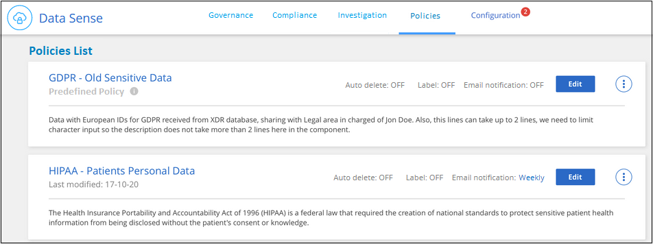
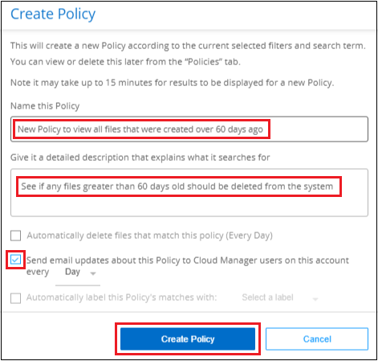

Request doc changes
Request doc changes Edit this page
Edit this page Learn how to contribute
Learn how to contributeOrganizing your private data
Contributors
Cloud Data Sense provides many ways for you to manage and organize your private data. This makes it easier to see the data that is most important to you.
-
If you are subscribed to Azure Information Protection (AIP) to classify and protect your files, you can use Cloud Data Sense to manage those AIP labels.
-
You can add Tags to files that you want to mark for organization or for some type of follow-up.
-
You can assign a Cloud Manager user to a specific file, or to multiple files, so that person can be responsible for managing the file.
-
Using the "Policy" functionality you can create your own custom search queries so that you can easily see the results by clicking one button.
-
You can send email alerts to Cloud Manager users when certain critical Policies return results.

|
The capabilities described in this section are available only if you have chosen to perform a full classification scan on your data sources. Data sources that have had a mapping-only scan do not show file-level details. |
Should I use tags or labels?
Below is a comparison of Data Sense tagging and Azure Information Protection labeling.
| Tags | Labels |
|---|---|
File tags are an integrated part of Data Sense. |
Requires that you have subscribed to Azure Information Protection (AIP). |
The tag is only kept in the Data Sense database - it is not written to the file. |
The label is part of the file and when the label changes, the file changes. This change also changes the file accessed and modified times. |
You can have multiple tags on a single file. |
You can have one label on a single file. |
The tag can be used for internal Data Sense action, such as copy, move, delete, run a policy, etc. |
Other systems that can read the file can see the label - which can be used for additional automation. |
Only a single API call is used to see if a file has a tag. |
Categorizing your data using AIP labels
You can manage AIP labels in the files that Cloud Data Sense is scanning if you have subscribed to Azure Information Protection (AIP). AIP enables you to classify and protect documents and files by applying labels to content. Data Sense enables you to view the labels that are already assigned to files, add labels to files, and change labels when a label already exists.
Cloud Data Sense supports AIP labels within the following file types: .DOC, .DOCX, .PDF, .PPTX, .XLS, .XLSX.
|
|
|
Integrating AIP labels in your workspace
Before you can manage AIP labels, you need to integrate the AIP label functionality into Cloud Data Sense by signing into your existing Azure account. Once enabled, you can manage AIP labels within files for all working environments and data sources in your Cloud Manager workspace.
-
You must have an account and an Azure Information Protection license.
-
You must have the login credentials for the Azure account.
-
If you plan to change labels in files that reside in Amazon S3 buckets, ensure that the permission
s3:PutObjectis included in the IAM role. See setting up the IAM role.
-
From the Cloud Data Sense Configuration page, click Integrate AIP Labels.

-
In the Integrate AIP Labels dialog, click Sign in to Azure.
-
In the Microsoft page that appears, select the account and enter the required credentials.
-
Return to the Cloud Data Sense tab and you’ll see the message "AIP Labels were integrated successfully with the account <account_name>".
-
Click Close and you’ll see the text AIP Labels integrated at the top of the page.

You can view and assign AIP labels from the results pane of the Investigation page. You can also assign AIP labels to files using Policies.
Viewing AIP labels in your files
You can view the current AIP label that is assigned to a file.
In the Data Investigation results pane, click  for the file to expand the file metadata details.
for the file to expand the file metadata details.

Assigning AIP labels manually
You can add, change, and remove AIP labels from your files using Cloud Data Sense.
Follow these steps to assign an AIP label to a single file.
-
In the Data Investigation results pane, click
 for the file to expand the file metadata details.
for the file to expand the file metadata details.
-
Click Assign a Label to this file and then select the label.
The label appears in the file metadata.
To assign an AIP label to multiple files:
-
In the Data Investigation results pane, select the file, or files, that you want to label.

-
To select individual files, check the box for each file (
 ).
). -
To select all files on the current page, check the box in the title row (
 ).
).
-
-
From the button bar, click Label and select the AIP label:

The AIP label is added to the metadata for all selected files.
Assigning AIP labels automatically with Policies
You can assign an AIP label to all the files that meet the criteria of the Policy. You can specify the AIP label when creating the Policy, or you can add the label when editing any Policy.
Labels are added or updated in files continuously as Cloud Data Sense scans your files.
Depending on whether a label is already applied to a file, and the classification level of the label, the following actions are taken when changing a label:
| If the file… | Then… |
|---|---|
Has no label |
The label is added |
Has an existing label of a lower level of classification |
The higher level label is added |
Has an existing label of a higher level of classification |
The higher level label is retained |
Is assigned a label both manually and by a Policy |
The higher level label is added |
Is assigned two different labels by two Policies |
The higher level label is added |
Follow these steps to add an AIP label to an existing Policy.
-
From the Policies List page, click Edit for the Policy where you want to add (or change) the AIP label.

-
In the Edit Policy page, check the box to enable automatic labels for files that match the Policy parameters, and select the label (for example, General).

-
Click Save Policy and the label appears in the Policy description.
|
|
If a Policy was configured with a label, but the label has since been removed from AIP, the label name is turned to OFF and the label is not assigned anymore. |
Removing the AIP integration
If you no longer want the ability to manage AIP labels in files, you can remove the AIP account from the Cloud Data Sense interface.
Note that no changes are made to the labels you have added using Data Sense. The labels that exist in files will stay as they currently exist.
-
From the Configuration page, click AIP Labels integrated > Remove Integration.

-
Click Remove Integration from the confirmation dialog.
Applying tags to manage your scanned files
You can add a tag to files that you want to mark for some type of follow-up. For example, you may have found some duplicate files and you want to delete one of them, but you need to check to see which one should be deleted. You could add a tag of "Check to delete" to the file so you know this file requires some research and some type of future action.
Data Sense enables you to view the tags that are assigned to files, add or remove tags from files, and change the name or delete an existing tag.
Note that the tag is not added to the file in the same way as AIP Labels are part of the file metadata. The tag is just seen by Cloud Manager users using Cloud Data Sense so you can see if a file needs to be deleted or checked for some type of follow-up.

|
Tags assigned to files in Cloud Data Sense are not related to the tags you can add to resources, such as volumes or virtual machine instances. Data Sense tags are applied at the file level. |
Viewing files that have certain tags applied
You can view all the files that have specific tags assigned.
-
Click the Investigation tab from Cloud Data Sense.
-
In the Data Investigation page, click Tags in the Filters pane and then select the required tags.

The Investigation Results pane displays all the files that have those tags assigned.
Assigning tags to files
You can add tags to a single file or to a group of files.
To add a tag to a single file:
-
In the Data Investigation results pane, click
for the file to expand the file metadata details. -
Click the Tags field and the currently assigned tags are displayed.
-
Add the tag or tags:
-
To assign an existing tag, click in the New Tag… field and start typing the name of the tag. When the tag you are looking for appears, select it and press Enter.
-
To create a new tag and assign it to the file, click in the New Tag… field, enter the name of the new tag, and press Enter.

The tag appears in the file metadata.
-
To add a tag to multiple files:
-
In the Data Investigation results pane, select the file, or files, that you want to tag.
-
To select individual files, check the box for each file (
). -
To select all files on the current page, check the box in the title row (
).
-
-
From the button bar, click Tags and the currently assigned tags are displayed.
-
Add the tag or tags:
-
To assign an existing tag, click in the New Tag… field and start typing the name of the tag. When the tag you are looking for appears, select it and press Enter.
-
To create a new tag and assign it to the file, click in the New Tag… field, enter the name of the new tag, and press Enter.

-
-
Approve adding the tags in the confirmation dialog and the tags are added to the metadata for all selected files.
Deleting tags from files
You can delete a tag if you don’t need to use it anymore.
Just click the x for an existing tag.
If you had selected multiple files, the tag is removed from all the files.
Assigning users to manage certain files
You can assign a Cloud Manager user to a specific file, or to multiple files, so that person can be responsible for any follow-up actions that need to be done on the file. This capability is often used with the feature to add custom Status tags to a file.
For example, you might have a file that contains certain personal data that allows too many users read and write access (open permissions). So you could assign the Status tag "Change permissions" and assign this file to user "Joan Smith" so they can decide how to fix the issue. When they have fixed the issue they could change the Status tag to "Completed".
Note that the user name is not added to the file as part of the file metadata - it is just seen by Cloud Manager users when using Cloud Data Sense.
A new Filter in the Investigation page enables you to easily view all files that have the same person in the "Assigned To" field.
To assign a user to a single file:
-
In the Data Investigation results pane, click
for the file to expand the file metadata details. -
Click the Assigned to field and select the user name.

The User name appears in the file metadata.
To assign a user to multiple files:
-
In the Data Investigation results pane, select the file, or files, that you want to assign to a user.
-
To select individual files, check the box for each file (
). -
To select all files on the current page, check the box in the title row (
).
-
-
From the button bar, click Assign to and select the user name:

The user is added to the metadata for all selected files.
Controlling your data using Policies
Policies are like a favorites list of custom filters that provide search results in the Investigation page for commonly requested compliance queries. Cloud Data Sense provides a set of predefined Policies based on common customer requests. You can create custom Policies that provide results for searches specific to your organization.
Policies provide the following functionality:
-
Predefined Policies from NetApp based on user requests
-
Ability to create your own custom Policies
-
Launch the Investigation page with the results from your Policies in one click
-
Send email alerts to Cloud Manager users when certain critical Policies return results so you can get notifications to protect your data
-
Assign AIP (Azure Information Protection) labels automatically to all files that match the criteria defined in a Policy
-
Delete files automatically (once per day) when certain Policies return results so you can protect your data automatically
The Policies tab in the Compliance Dashboard lists all the predefined and custom Policies available on this instance of Cloud Data Sense.

In addition, Policies appear in the list of Filters in the Investigation page.
Viewing Policy results in the Investigation page
To display the results for a Policy in the Investigation page, click the  button for a specific Policy, and then select Investigate Results.
button for a specific Policy, and then select Investigate Results.

Creating custom Policies
You can create your own custom Policies that provide results for searches specific to your organization.
-
From the Data Investigation page, define your search by selecting all the filters you want to use. See Filtering data in the Data Investigation page for details.
-
Once you have all the filter characteristics just the way you want them, click Create Policy from this search.

-
Name the Policy and select other actions that can be performed by the Policy:
-
Enter a unique name and description.
-
Optionally, check the box to automatically delete files that match the Policy parameters. Learn more about deleting source files using a policy.
-
Optionally, check the box if you want notification emails sent to Cloud Manager users, and choose the interval at which the email is sent. Learn more about sending email alerts based on policy results.
-
Optionally, check the box to automatically assign AIP labels to files that match the Policy parameters, and select the label. (Only if you have already integrated AIP labels. Learn more about AIP labels.)
-
Click Create Policy.

-
The new Policy appears in the Policies tab.
Sending email alerts when non-compliant data is found
Cloud Data Sense can send email alerts to Cloud Manager users when certain critical Policies return results so you can get notifications to protect your data. You can choose to send the email notifications on a daily, weekly, or monthly basis.
You can configure this setting when creating the Policy or when editing any Policy.
Follow these steps to add email updates to an existing Policy.
-
From the Policies List page, click Edit for the Policy where you want to add (or change) the email setting.

-
In the Edit Policy page, check the box if you want notification emails sent to Cloud Manager users, and choose the interval at which the email is sent (for example, every Week).

-
Click Save Policy and the interval at which the email is sent appears in the Policy description.
The first email is sent now if there are any results from the Policy - but only if any files meet the Policy criteria. No personal information is sent in the notification emails. The email indicates that there are files that match the Policy criteria, and it provides a link to the Policy results.
Editing Policies
You can modify certain parts of a Policy depending on the type of Policy:
-
Custom Policies - You can modify the Name, the Description, whether email notifications are sent, and whether AIP labels are added.
-
Predefined Policies - You can modify only whether email notifications are sent and whether AIP labels are added.
|
|
If you need to change the filter parameters for a custom Policy, you’ll need to create a new Policy with the parameters you want, and then delete the old Policy. |
To modify a Policy, click the Edit button, enter your changes on the Edit Policy page, and click Save Policy.
Deleting Policies
You can delete any custom Policy that you created if you no longer need it. You can’t delete any of the predefined Policies.
To delete a Policy, click the button for a specific Policy, click Delete Policy, and then click Delete Policy again in the confirmation dialog.
List of predefined Policies
Cloud Data Sense provides the following system-defined Policies:
| Name | Description | Logic |
|---|---|---|
S3 publicly-exposed private data |
S3 Objects containing personal or sensitive personal information, with open Public read access. |
S3 Public AND contains personal OR sensitive personal info |
PCI DSS – Stale data over 30 days |
Files containing Credit Card information, last modified over 30 days ago. |
Contains credit card AND last modified over 30 days |
HIPAA – Stale data over 30 days |
Files containing Health information, last modified over 30 days ago. |
Contains health data (defined same way as in HIPAA report) AND last modified over 30 days |
Private data – Stale over 7 years |
Files containing personal or sensitive personal information, last modified over 7 years ago. |
Files containing personal or sensitive personal information, last modified over 7 years ago |
GDPR – European citizens |
Files containing more than 5 identifiers of an EU country’s citizens or DB Tables containing identifiers of an EU country’s citizens. |
Files containing over 5 identifiers of an (one) EU citizens or DB Tables containing rows with over 15% of columns with one country’s EU identifiers. (any one of the national identifiers of the European countries. Does not include Brazil, California, USA SSN, Israel, South Africa) |
CCPA – California residents |
Files containing over 10 California Driver’s License identifiers or DB Tables with this identifier. |
Files containing over 10 California Driver’s License identifiers OR DB Tables containing California Driver’s license |
Data Subject names – High risk |
Files with over 50 Data Subject names. |
Files with over 50 Data Subject names |
Email Addresses – High risk |
Files with over 50 Email Addresses, or DB Columns with over 50% of their rows containing Email Addresses |
Files with over 50 Email Addresses, or DB Columns with over 50% of their rows containing Email Addresses |
Personal data – High risk |
Files with over 20 Personal data identifiers, or DB Columns with over 50% of their rows containing Personal data identifiers. |
Files with over 20 personal, or DB Columns with over 50% of their rows containing personal |
Sensitive Personal data – High risk |
Files with over 20 Sensitive Personal data identifiers, or DB Columns with over 50% of their rows containing Sensitive Personal data. |
Files with over 20 sensitive personal, or DB Columns with over 50% of their rows containing sensitive personal |